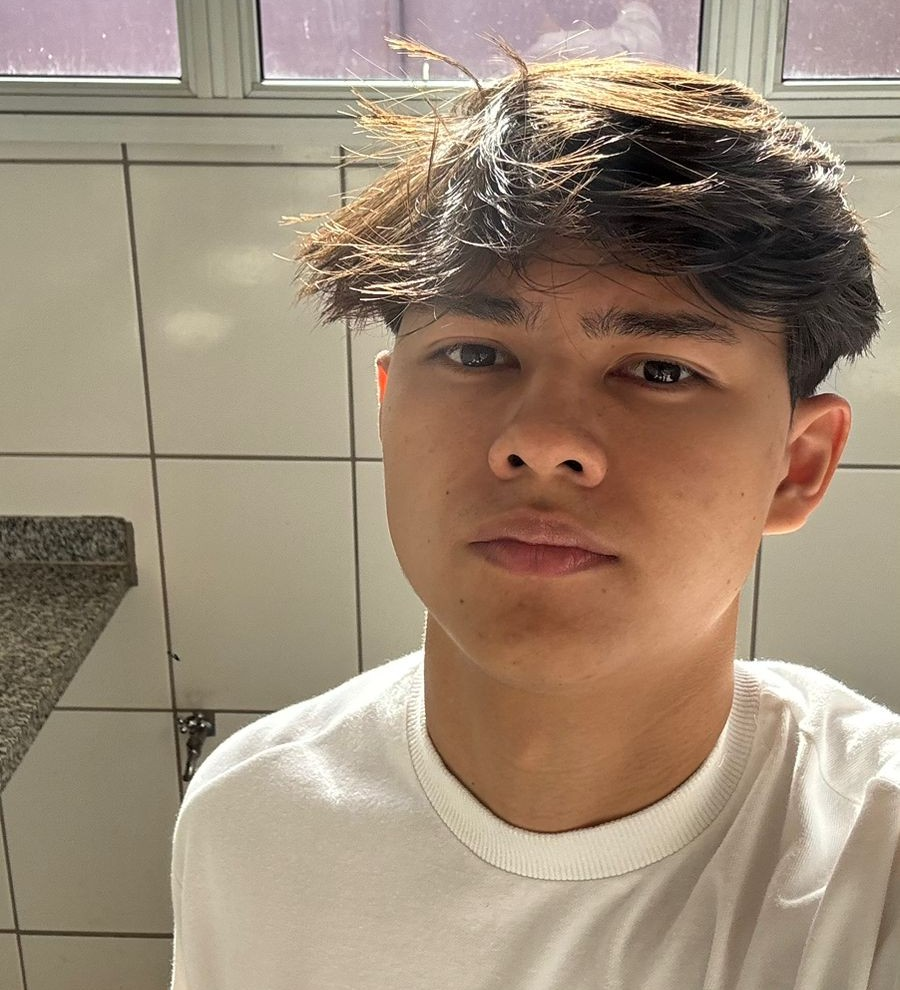

Quem sou eu?
Meu nome é Leonardo Tsuzuki de Almeida, tenho 19 anos e nasci no dia 28/11/2006. Sou uma pessoa tranquila e esforçada. Meu objetivo é ter liberdade financeira e poder conciliar o trabalho com o lazer.

Onde eu estudo?
IFSP - Campus Votuporanga
Atualmente estou no 4° semestre do curso de Sistemas de Informação, curso que prepara o estudante para unir tecnologia e negócios, ensinando a desenvolver softwares e aplicativos, gerenciar com segurança bancos de dados e redes, liderar projetos e equipes de TI alinhados aos objetivos de empresas, e aplicar inovações como inteligência artificial para otimizar processos e apoiar a tomada de decisões estratégicas.
Etec-Fernandópolis
Além do curso superior, estou no último módulo do Curso Técnico de Desenvolvimento de Sistemas, focado na prática em laboratório para capacitar o aluno a criar, testar e manter softwares, sites e aplicativos comerciais. Diferente do bacharelado (que possui muitas matérias de gestão e negócios), a ETEC vai direto ao ponto técnico: ensina lógica de programação, desenvolvimento web (HTML, CSS, JavaScript) e mobile, além de modelagem de bancos de dados (como MySQL).


Onde eu trabalho?
Atualmente atuo como jovem aprendiz exercendo o cargo de auxiliar administrativo em uma empresa da minha cidade. Lá dou suporte às rotinas administrativas com uso diário de sistema ERP, elaboração de planilhas e relatórios, organização de documentos e atendimento interno.
Através do contato direto com o ERP da empresa, desenvolvi visão de processos de negócio, entendimento de fluxos operacionais e habilidade para mapear como sistemas são usados na prática — experiência que complementa minha formação técnica como desenvolvedor.